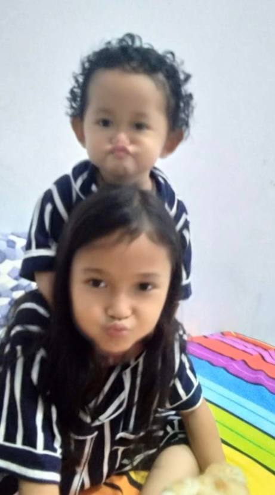
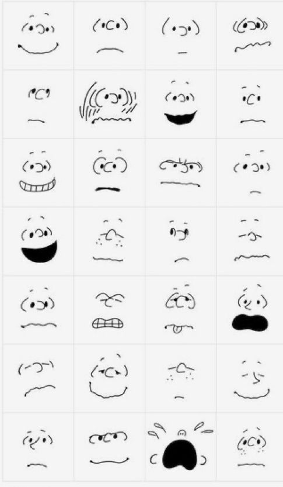
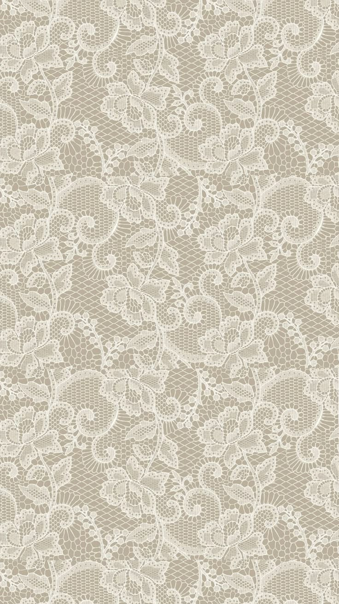
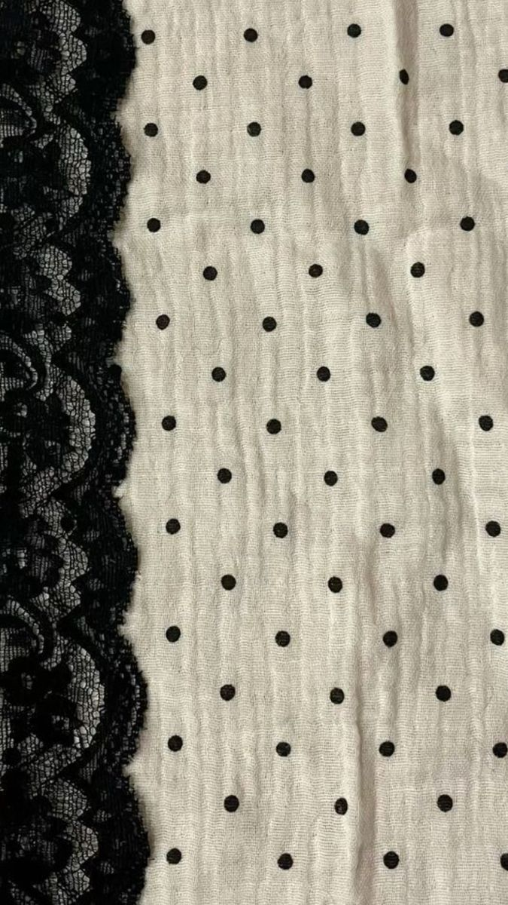

Portofolio
Karya Nyata dari proses belajar
Website ini merupakan media pendukung untuk menampilkan hasil Ujian Praktik Terintegrasi. Konten utama pada website ini adalah video broadcasting pembelajaran yang berisi penyampaian teks argumentasi secara lisan.
Website ini merupakan website portofolio digital yang berisi hasil karya dan pembelajaran saya selama mengikuti Ujian Praktik Terintegrasi.
Tujuan pembuatan website ini adalah untuk menampilkan karya yang telah saya buat serta melatih kemampuan saya dalam membuat website sederhana menggunakan HTML.
"Peran Internship Curriculum di Nisvara Bakery dalam Mengembangkan Keterampilan Siswa."
Alasan saya memilih topik “Peran Internship Curriculum di Nisvara Bakery dalam Mengembangkan Keterampilan Siswa” adalah karena saya mengalami langsung kegiatan IC di sana, sehingga lebih mudah memahami bagaimana prosesnya berlangsung. Selain itu, pengalaman yang saya dapat selama di Nisvara Bakery membantu saya dalam menyusun argumen berdasarkan hal yang benar-benar saya alami, jadi penulisannya terasa lebih nyata dan sesuai.
Pesan yang ingin saya sampaikan adalah, semoga penonton tidak memilih bidang secara asal-asalan. Saya menyarankan penonton untuk memilih bidang yang sesuai dengan minat dan bakat agar dapat ditekuni dengan fokus, dan dengan hati yang gembira.
Saya mempelajari banyak hal dari ujian praktik kali ini. Saya belajar bahwa kerjasama adalah kunci agar pekerjaan berkelompok cepat selesai. Saya juga belajar bahwa kita harus disiplin dan konsisten dalam melakukan pekerjaan.



